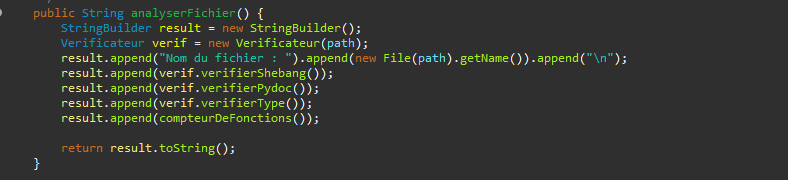

Voici les principaux objectifs et fonctionnalités de l'application Java proposée pour ce projet est de :
-Répertorier les fichiers Python dans un répertoire
-Détecter l'absence d'annotations de type dans les fonctions
-Identifier les fichiers en absence de shebang
-Reconnaître les fonctions sans commentaires appropriés "pydoc".
-Inclure des options pour ajouter automatiquement des commentaires et shebangs manquants.
-Générer des statistiques de qualité pour les fichiers Python.
2.2 Spécification
Pour réaliser les objectifs, notre application devra savoir dans un 1er temps :
-Lire des ficher python dans un répertoire et sous répertoire avec les classes java FileReader et BufferedReader.
-Analyser la qualité du code python pour vérifier si les annotation type, shebang et commentaire sont présents.
-Générer les statistiques pour confirmer les présences de shebang, pydoc et des annotation type.:
-Réécriture des fichiers python avec FileWriter et BufferedWriter pour écrire les donnee dans les fichiers.
-Utiliser java swing pour créer l’interface graphique et les classes nécessaire pour le mode console.
-Gérée toutes les exceptions courantes.
3. Conception et Implémentation
3.1 Choix et Décisions
Nous avons divisé le travail en 3 classes afin de repartir équitablement la charge de travail et mieux se repérer dans le projet.
Nous avons donc fait une partie CLI, GUI et outil afin d’utiliser les outils directement dans le CLI et le GUI.
La partie qui nous a pris le plus de temps était la création des outils, ce qui est le corps du projet et nous avons pris la décision de travailler ensemble sur cette grosse partie de code afin de par la suite séparer le travail entre le CLI et le GUI
3.2 Fonctionnalités
Les outils créés et utilisés sont nombreux, nous avons une classe un aide correction qui va gérer l’écriture dans les fichiers avec ajouterCommentaire() ou encore ajouterShebang() à l’aide de java.io et java.util.
La deuxième classe importante est la classe Vérificateur qui va gérer tout ce qui lis pour vérifier si les fichiers possèdent par exemple les 2 lignes de shebang ou encore si le typage est bel et bien présent.
Ensuite nous avons une classe RechercheFichier qui va juste renvoyer le chemin d’un fichier grâce a son nom et une classe Statistique qui fait les statistiques des fichiers et dossier a l’aide du vérificateur.
Et pour finir une classe Analyseur qui fait appel a toute les fonctions présentes en même temps. Exemple :
Cliquez iciPublic String AnalyseFichier

4. Organisation du travail
4.1 Répartition des tâches
Pour le planning, nous avons créé un diagramme représentant les tâches à faire. Il n’a pas été suivi à la lettre mais nous avons quand même pu suivre l’organisation du travail et par rapport aux tâches demandées.